ĐÁP ÁN ÔN TẬP KIỂM TRA GIỮA KỲ II - MÔN: HÓA HỌC, LỚP 11
NĂM HỌC: 2022 - 2023
I. Trắc nghiệm:
Câu 1: Chất nào sau đây là hợp chất hữu cơ?
A. CaCl2
B. K2CO3
<D>C. C12H22O11
D. CuSO4
Câu 2: Đồng đẳng kế tiếp của C2H2có công thức phân tử là?
A. C2H4.
<D>B. C3H4.
C. C3H6.
D. C2H6.
Câu 3: Chất nào sau đây cùng dãy đồng đẳng với C2H5OH?
A. CH3-O-CH3.
<D>B. CH3OH.
C. CH3COOH.
D. C2H5CHO.
Câu 4: Chất nào sau đây cùng dãy đồng đẳng với C3H6?
<D>A. C2H4.
B. C3H8.
C. C4H10.
C. C2H2.
Câu 5: Trong phân tử hợp chất hữu cơ nguyên tử cacbon liên kết với nguyên tử khác theo hóa trị mấy?
A. I.
B. II.
C. III.
<D>D. IV.
Câu 6: Ở điều kiện thường, ankan nào sau đây là chất khí?
<D>A. C3H8.
B. C5H12.
C. C6H14.
D. C7H16.
Câu 7: Ở điều kiện thường, ankan nào sau đây là chất lỏng?
A. C4H10.
<D>B. C6H14.
C. C3H8.
D. CH4.
Câu 8: Công thức phân tử nào sau đây là của hexan?
A. C4H10.
B. C3H8.
<D>C. C6H14.
D. C5H12.
Câu 9: Ankan có khả năng tham gia phản ứng nào sau đây?
<D>A. Phản ứng thế với halogen.
B. Phản ứng cộng với hiđro.
C. Phản ứng trùng hợp.
D. Phản ứng thủy phân.
Câu 10: Ankan không có khả năng tham gia phản ứng nào sau đây?
A. Phản ứng thế với halogen.
B. Phản ứng tách hiđro.
<D>C. Phản ứng trùng hợp.
D. Phản ứng cháy.
Câu 11: Ankan nào sau đây có đồng phân mạch cacbon?
A. CH4.
B. C2H6.
C. C3H8.
<D>D. C4H10.
Câu 12: Ankan nào sau đây không có đồng phân mạch cacbon?
<D>A. CH4.
B. C5H12.
C. C6H14.
D. C4H10.
Câu 13: Số nguyên tử H trong phân tử butan là
A. 4.
<D>B. 10.
C. 8.
D. 6.
Câu 14: Chất nào sau đây chỉ chứa liên kết đơn trong phân tử?
<D>A. Butan.
B. Axetilen.
C. Etilen.
D. Propilen.
Câu 15: Ankan X có 83,33 % C về khối lượng. X là (Cho nguyên tử khối: H = 1; C = 12)
<D> A.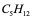
B. C6H14.
C. C7H16.
D. C8H18.
Câu 16: Ankan X có công thức phân tử C5H12. Clo hóa X, thu được 3 sản phẩm dẫn xuất monoclo. Tên gọi của X là
A. 2,2-đimetylpropan.
B. 2-metylbutan.
<D> C. pentan.
D. 2-đimetylpropan.
Câu 17: Ankan X có công thức phân tử C5H12. Clo hóa X, thu được 4 sản phẩm dẫn xuất monoclo. Tên gọi của X là
A. 2,2-đimetylpropan.
<D> B. 2-metylbutan.
C. pentan.
D. 2-đimetylpropan.
Câu 18: Ankan X có công thức phân tử C5H12. Clo hóa X, chỉ thu được 1 sản phẩm dẫn xuất monoclo. Tên gọi của X là
<D> A. 2,2-đimetylpropan.
B. 2-metylbutan.
C. pentan
D. 2-đimetylpropan.
Câu 19: Ankan X có chứa 18 nguyên tử hiđrô trong phân tử. Số nguyên tử cacbon trong một phân tử X là
<D> A. 8
B. 5
C. 6
D. 7.
Câu 20: Đốt cháy hoàn toàn 1,12 lít butan (đktc). Sản phẩm cháy hấp thụ vào dung dịch Ca(OH)2 dư thu được m gam kết tủa. Giá trị của m là (Cho nguyên tử khối: Ca = 40, O = 16, C = 12)
A. 10,0 gam.
<D> B. 20,0 gam.
C. 7,5 gam.
D. 15 gam.
Câu 21: Công thức phân tử chung của các anken là
A. CnH2n+2 (n >= 1)
<D> B.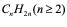CnH2n (n >= 2)
C. CnH2n-2 (n >= 2).
D. CnH2n-6 (n >= 6)
Câu 22: Chất nào sau đây là đồng phân của but-2-en?
A. Buta-1,3-đien.
B. But-1-in.
<D> C. But-1-en.
D. But-2-in.
Câu 23: Propen còn có tên khác là
A. metylaxetilen.
B. propan.
<D> C. propilen.
D. propin.
Câu 24: Ở điều kiện thường, chất nào sau đây làm mất màu dung dịch Br2?
A. metan.
<D> B. eten.
C. propan.
D. butan.
Câu 25: Ở điều kiện thường, chất nào sau đây làm mất màu dung dịch KMnO4?
A. metan.
<D> B. propen.
C. propan.
D. butan.
Câu 26: Số nguyên tử C của 3-metylpentan là
A. 7.
B. 3.
<D> C. 6.
D. 5.
Câu 27: Hóa chất dùng để phân biệt 2 bình đựng chất khí etilen và metan bị mất nhãn là
A. dung dịch AgNO3 / NH3.
<D> B. dung dị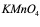.KMnO4
C. dung dịch NaCl.
D. nước vôi trong.
Câu 28: Hóa chất dùng để phân biệt 2 chất khí propilen và etan bị mất nhãn là
A. dung dịch AgNO3 / NH3.
<D> B. nước brom.
C. dung dịch NaOH.
D. nước vôi trong.
Câu 29: Chất nào sau đây là sản phẩm chính khi hiđrat hóa CH3-CH2-CH=CH2?
<D> A.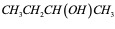
B. CH3CH2CH2CH2OH.
C. CH3CH2CH2CH3.
D. CH3CH2CH2CH2Cl.
Câu 30: Cho CH3-CH2-CH=CH2 tác dụng với HCl thu được sản phẩm chính là
A. CH3-CH2-CH2-CH2-Cl.
<D> B.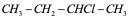CH3-CH2-CHCl-CH3.
C. CH3-CHCl-CH-Cl CH3.
D. CH3-CH2-CH2-CHCl2.
Câu 31: Có bao nhiêu liên kết đôi trong phân tử 2-metylbuta-1,3-đien?
A. 1.
<D> B. 2. `
C. 3.
D. 4.
Câu 32: 0,5 mol buta-1,3-đien phản ứng tối đa với bao nhiêu mol brom?
A. 1,5.
<D> B. 1.
C. 0,5.
D. 2.
Câu 33: Sản phẩm chính thu được khi cho buta-1,3-đien tác dụng với dung dịch brom (tỉ lệ mol 1:1) ở -80 độ C là
A. CH2Br-CH=CH-CH2Br.
<D> B.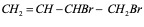CH2=CH-CHBr-CH2Br.
C. CH2Br=CHBr-CHBr-CH2Br.
D. CH3-CHBr-CHBr-CH3.
Câu 34: Sản phẩm chính thu được khi cho buta-1,3-đien tác dụng với dung dịch brom (tỉ lệ mol 1:1) ở 40 độ C là
<D> A.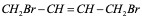
B. CH2Br-CHBr-CH=CH2.
C. CH2Br-CHBr-CHBr-CH2Br.
D. CH3-CHBr-CHBr-CH3.
Câu 35: Sản phẩm chính thu được khi cho buta-1,3-đien tác dụng với dung dịch HBr (tỉ lệ mol 1:1) ở 40 độ C là
<D> A.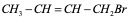CH3-CH=CH-CH2Br
B. CH2Br-CHBr-CH=CH2.
C. CH2Br-CH2-CHBr-CH2Br.
D. CH3-CHBr=CHBr-CH3.
Câu 36: Sản phẩm chính thu được khi cho buta-1,3-đien tác dụng với dung dịch HBr (tỉ lệ mol 1:1) ở -80 độ C là
<D> A.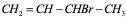CH2=CH-CHBr-CH3
B. CH2Br-CHBr-CH=CH2.
C. CH2Br-CHBr-CHBr-CH2Br
D. CH3-CHBr-CHBr-CH3
Câu 37: Chất nào sau đây là ankađien liên hợp?
A. CH3-CHBr-CHBr-CH3
B. CH2=C=CH-CH3.
<D> C.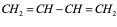CH2=CH-CH=CH2
D. CH2=CH-CH2-CH=CH2.
Câu 38: Công thức phân tử tổng quát của các ankin là
A. CnH2n (n >= 2) .
<D> B.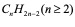CnH2n-2 (n >= 2) 
C.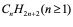CnH2n+2 (n >= 1) . 
D.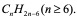CnH2n-6 (n >= 6)
Câu 39: Cho 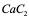vào nước, thu được khí X. X là
A. CH4.
<D> B.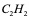 
C.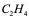 
D.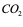.
Câu 40: Ankin nào sau đây không tác dụng với dung dịch AgNO3/ NH3?
A. CH≡CH.
B. CH≡C-CH3.
<D> C.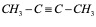CH3-C≡C-CH3.
D.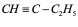CH≡C-C2H5
Câu 41: Chất nào sau đây tác dụng với dung dịch AgNO3 / NH3 cho kết tủa màu vàng?
A. CH2=CH-CH3.
<D> B.CH≡C-C2H5.
C. CH2=CH-CH=CH2.
D. CH3-C≡C-CH3.
Câu 42: Cho 0,05 mol C2H2 phản ứng hoàn toàn với lượng dư dung dịch AgNO3 trong NH3, thu được m gam kết tủa màu vàng. Giá trị của m là
<D> A. 12,00.
B. 13,30.
C. 6,65.
D. 24,00.
Câu 43: Công thức chung của ankan là:
A. CnH2n + 1 (n ≥ 1)
<D> B. CnH2n+2 (n ≥ 1)
C. CnH2n+2 (n ≥ 2)
D. CnH2n-2 (n ≥ 1)
Câu 44: Ankan có những loại đồng phân nào?
A. Đồng phân nhóm chức
<D> B. Đồng phân cấu tạo
C. Đồng phân vị trí nhóm chức.
D. Đồng phân hình học
Câu 45: Tìm câu trả lời đúng khi nói về ankan?
A. Ankan là hiđrocacbon no có mạch vòng.
<D> B. Ankan là hiđrocacbon no có mạch hở.
C. Ankan là hiđrocacbon không no có mạch vòng.
D. Trong phân tử ankan có một liên kết pi.
Câu 46: Hiđro cacbon no được dùng làm nhiên liệu vì lý do nào sau đây?
A. Hiđrocacbon no có phản ứng thế.
B. Hiđrocacbon no có nhiều trong tự nhiên.
C. Hiđrocacbon no nhẹ hơn nước.
<D> D. Hiđrocacbon no có nhiều trong tự nhiên và cháy tỏa nhiều nhiệt.
Câu 47: Cho propan tác dụng với khí clo (askt) theo tỉ lệ mol 1:1 thu được tối đa bao nhiêu sản phẩm?
A. 1
<D> B. 2
C. 3
D. 4
Câu 48: Chất có công thức cấu tạo:
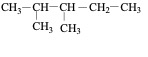
Tên của chất đó là
A. 2,2-đimetylpentan
<D> B. 2,3-đimetylpentan
C. 2,2,3-trimetylpentan
D. 2,2,3-trimetylbutan
Câu 49: Ankan có CTPT C4H10 có bao nhiêu đồng phân?
A. 1
<D> B. 2
C. 3
D. 4
Câu 50: Một hỗn hợp 2 ankan liên tiếp trong dãy đồng đẳng có tỉ khối hơi với H2 là 24,8. Công thức phân tử của 2 ankan là
A. C2H6 và C3H8.
B. C4H10 và C5H12.
<D> C. C3H8 và C4H10.
D. C3H8 và C5H12
Câu 51: Đốt cháy hoàn toàn V lít (đktc) một hiđrocacbon X thu được 6,72 lít khí CO2 (đktc) và 8,1 gam H2O. Giá trị của V và công thức phân tử của X là
<D> A. 3,36; C2H6.
B. 3,36; CH4.
C. 2,24; CH4.
D. 2,24; C2H6.
Câu 52: Hỗn hợp 2 ankan ở thể khí là đồng đẳng kế tiếp. Đốt cháy hoàn toàn 2,24 lít hỗn hợp trên ta thu được 7,84 lít khí CO2 (các khí đo ở đktc). Công thức phân tử của 2 ankan là
A. CH4 và C3H8.
B. C2H6 và C3H8.
C. CH4 và C2H6.
<D> D. C3H8 và C4H10.
Câu 53: Đốt cháy hiđrocacbon M thu được CO2 và H2O theo tỉ lệ số mol tương ứng là 1:2. M có CTPT là
A. C3H6
B. C2H6
<D> C. CH4
D. C3H8
Câu 54: Đốt cháy hoàn toàn 0,1 mol hỗn hợp gồm CH4, C4H10 và C2H4 thu được 0,14 mol CO2 và 0,23 mol H2O. Số mol của ankan và anken trong hỗn hợp lần lượt là
<D> A. 0,09 và 0,01.
B. 0,01 và 0,09.
C. 0,08 và 0,02.
D. 0,02 và 0,08.
Câu 55: Hỗn hợp X gồm metan và 1 anken. Cho 10,08 lít hỗn hợp X qua dung dịch brom dư thấy có 1 chất khí bay ra, đốt cháy hoàn toàn khí này thu được 5,544 g CO2. Thành phần % về thể tích metan và anken trong hỗn hợp X là
<D> A. 28% và 72%.
B. 36.5% và 63.5%.
C. 20% và 80%.
D. 73.9% và 26.1%.
Câu 56: Polietilen có công thức cấu tạo nào sau đây?
A. CH2=CH2
B. (-CH2=CH2-)n
C. (CH2=CH2)n
<D> D. (-CH2-CH2-)n
Câu 57: Công thức chung của ankađien là
A. CnH2n + 2 (n ≥ 1)
B. CnH2n (n ≥ 2)
C. CnH2n-2 (n ≥ 2)
<D> D. CnH2n-2 (n ≥ 3)
Câu 58: Khi đốt cháy anken thì thu được khí CO2 và H2O với tỷ lệ số mol là
<D> A. Số mol CO2 = Số mol H2O
B. Số mol CO2 > Số mol H2O
C. Số mol CO2 < Số mol H2O
D. Tùy vào tỷ lệ số mol phản ứng
Câu 59: Ankin có những loại đồng phân nào?
A. Đồng phân hình học
<D> B. Đồng phân cấu tạo và vị trí liên kết ba
C. Đồng phân vị trí liên kết ba.
D. Đồng phân cấu tạo mạch cacbon.
Câu 60: Axetilen dùng để hàn cắt kim loại vì lý do nào sau đây?
<D> A. Axetilen cháy trong oxi tỏa nhiệt rất lớn.
B. Axetilen có phản ứng thế ion kim loại.
C. Axetilen có thể sản xuất từ đất đèn.
D. Axetilen có khả năng tác dụng với nhiều kim loại.
Câu 61: Công thức cấu tạo thu gọn của propilen là công thức nào cho sau đây?
A. CH3-C≡CH
<D> B. CH3-CH=CH2
C. CH3-CH=CH-CH3
D. H2C=CH2
Câu 62: But-2-en có công thức cấu tạo là
A. CH2=CH-CH2-CH3
<D> B. CH3-CH=CH-CH3
C. CH=CH(CH3)-CH3
D. CH2=C(CH3)-CH3
Câu 63: Trong phòng thí nghiệm, etilen thường được điều chế bằng cách
A. tách hiđro từ ankan.
B. crăckinh ankan.
<D> C. tách nước từ ancol etylic.
D. Nhiệt phân metan.
Câu 64: Để làm sạch metan có lẫn etilen ta cho hỗn hợp qua
A. khí hiđro có Ni ,t0.
<D> B. dung dịch Brom.
C. dung dịchAgNO3/NH3.
D. khí hiđroclo rua.
Câu 65: Cho ankin X có công thức cấu tạo sau: CH3-CH2-C≡CH. Tên của X là
A. But-2-in.
B. But-3-in.
<D> C. But-1-in.
D. Butin
Câu 66: Ankin C4H6 có bao nhiêu đồng phân?
A. 1
<D> B. 2
C. 3
D. 4
Câu 67: Để làm sạch etilen có lẫn axetilen ta cho hỗn hợp đi qua dung dịch nào sau đây?
A. dd brom dư.
B. dd KMnO4 dư.
<D> C. dd AgNO3/NH3 dư.
D. NaOH dư.
Câu 68: Sơ đồ chuyển hoá nào sau đây: C2H2 ® X ® C2H5OH. X là chất nào cho sau đây?
A. C4H4.
<D> B. C2H4.
C. C2H3Cl.
D. C3H6
Câu 69: Phản ứng cộng H2O vào axetilen thu được sản phẩm là
A. CH2=CH-OH.
B. CH3-CH2-OH
<D> C. CH3-CH=O
D. CH3-O-CH3
Câu 70: Cho các chất sau: CH4, CH2=CH2, CH≡CH và CH3-C≡C-CH3. Kết luận nào sau đây đúng?
A. Cả 4 chất đều làm mất màu dung dịch Br2.
B. Có hai chất tạo kết tủa với dung dịch AgNO3/NH3.
<D> C. Có 3 chất làm mất màu dung dịch Br2.
D. Không có chất nào làm nhạt màu dung dịch KMnO4.
Câu 71: Trùng hợp eten, sản phẩm thu được có cấu tạo là
A. (–CH2=CH2–)n.
<D> B. (–CH2–CH2–)n.
C. (–CH=CH–)n.
D. (–CH3–CH3–)n .
Câu 72: Etin có tên gọi khác là
A. propilen.
B. etilen.
<D> C. axetilen.
D. propan.
Câu 73: Chất nào sau đây thuộc cùng dãy đồng đẳng với propilen?
A. Benzen.
<D> B. Eten.
C. Isopren.
D. Axetilen.
Câu 74: Cho dãy các chất: CH4; C2H6; C7H16; C6H14. Ở điều kiện thường, có bao nhiêu chất trong dãy ở thể khí?
A. 1.
<D> B. 2.
C. 3.
D. 4.
Câu 75: Ngày nay, trong công nghiệp, C2H2 được sản xuất chủ yếu từ chất nào sau đây?
A. CH3COONa.
B. CH3CH2OH.
<D> C. CH4.
D. C2H4.
Câu 76: Phát biểu nào sau đây đúng?
A. C2H6 ở trạng thái lỏng điều kiện thường.
B. C3H8 tan tốt trong nước.
<D> C. C2H4 tham gia phản ứng trùng hợp.
D. C3H8 làm mất màu nước brom.
Câu 77: Chất nào sau đây không có đồng phân hình học?
<D> A. But-1-en.
B. But-2-en.
C. Pent-2-en.
D. Hex-2-en.
Câu 78: Trùng hợp hiđrocacbon X, thu được poliisopren (cao su isopren). X là
<D> A. 2-metylbuta-1,3-đien.
B. But-2-en.
C. Buta-1,3-đien.
D. But-2-in.
Câu 79: Hóa chất dùng để phân biệt 2 bình đựng chất lỏng but-1-in; but-2-in bị mất nhãn là
<D> A. dung dịch AgNO3/NH3.
B. nước brom.
C. dung dịch NaCl.
D. nước vôi trong.
Câu 80: Hỗn hợp X gồm hai anken đồng đẳng kế tiếp, có tỉ khối so với H2 bằng 22,75. Đốt cháy hoàn toàn 9,1 gam X cần vừa đủ V lít O2 (đktc). Giá trị của V là
<D> A. 21,84.
B. 21,504.
C. 21,168.
D. 20,832.
Câu 81: Để làm mất màu hoàn toàn một dung dịch chứa 32 gam Br2 người ta phải dùng V lít C2H4 ở đktc. Giá trị của V là
A. 2,24 lít
B. 3,36 lít
<D> C. 4,48 lít
D. 6,72 lít
Câu 82: Đốt cháy hoàn toàn 3,36 lít anken X (đktc) thu được 13,44 lít khí CO2 (đktc). CTPT của X là
A. C2H4
B. C3H6
<D> C. C4H8
D. C5H10
Câu 83: Hỗn hợp (đktc) gồm (đktc) 3,36 lít C2H2 và V lít H2 đem dẫn vào bình đựng Ni nung nóng thì phản ứng vừa đủ để tạo C2H6 duy nhất trong bình. Giá trị của V là:
A. 4,48 lít
B. 2,24 lít
<D> C. 6,72 lít
D. 3,36 lít
Câu 84: Hỗn hợp khí X gồm H2 và C2H4 có tỉ khối so với He là 3,75. Dẫn X qua Ni nung nóng, thu được hỗn hợp khí Y có tỉ khối so với He là 5. Hiệu suất của phản ứng hiđro hoá là
A. 20%.
B. 25%.
C. 40%.
<D> D. 50%
Câu 85: Hỗn hợp X gồm hai ankin kế tiếp nhau trong cùng dãy đồng đẳng. Dẫn 5,6 lít hỗn hợp X (đktc) qua bình đựng dung dịch Br2 dư thấy khối lượng bình tăng thêm 11,4 gam. Công thức phân tử của hai ankin đó là:
A. C2H2 và C3H4.
<D> B. C3H4 và C4H6
C. C4H6 và C5H8.
D. C5H8 và C6H10.
Câu 86: Hỗn hợp X gồm H2, C2H4 và C3H6 có tỉ khối so với H2 là 9,25. Cho 22,4 lít X (đktc) vào bình kín có sẵn một ít bột Ni. Đun nóng bình một thời gian, thu được hỗn hợp khí Y có tỉ khối so với H2 bằng 10. Tổng số mol H2 đã phản ứng là
A. 0,070 mol.
B. 0,050 mol.
C. 0,015 mol.
<D> D. 0,075 mol
Câu 87: Hình vẽ sau đây mô tả thí nghiệm điều chế khí Y từ hỗn hợp rắn gồm CaC2 và Al4C3:
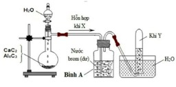
Hỗn hợp khí X là
A. C2H4, CO.
B. C2H6, CO2.
<D> C. CH4, C2H2.
D. C2H2, H2.
II. Tự luận:
Viết các phương trình hóa học của các phản ứng (ghi rõ điều kiện) theo sơ đồ sau:
a) 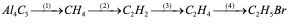
b) 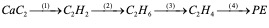
c) 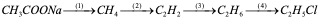
d) CH3COONa 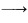 CH4 C2H2 C2H4 C2H5OH